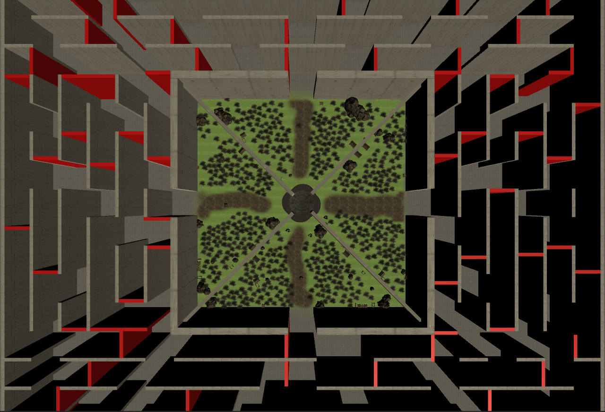

C'est vraiment pas compliqué !!
Le but est de sortir du labyrithe seul. Attention! de nombreuses épreuves vous attendent:
- Vous serez sain et sauf uniquement dans la Safe Zone.
- Prenez soin d'être rentré à la Safe Zone avant la tombée de la nuit car les monstres seront beaucoup plus nombreux et plus agressifs.
PS : Les portes seront fermées donc vous devrez survire toute la nuit, vos chances de survie sont très faibles.
- Pour survivre vous devrez traverser le dédale de couloirs du labyrinthe afin de trouver des items pour booster vos capacités.La difficulté, ici, est que le labyrinthe se verra modifié aléatoirement toute les nuits.
OSEREZ-VOUS REVIVRE L'INCROYABLE HISTOIRE D'EDWARD AZNAROV ?
Le multijoueur est un affrontement direct entre 4 joueurs, divisé en 3 étapes.
- La map est semblable à celle du solo mais réduite en taille, vous serez toujours protégé des attaques des monstres dans la Safe Zone. Cependant vous ferez quand même face aux autres joueurs que ce soit à l'intérieur ou à l'extérieur des murs.
- Pour augmenter vos chances de survie, vous devrez traverser le dédale de couloirs du labyrinthe afin de trouver des items pour booster vos capacité.
- L'idée est de diviser la Safe Zone en quatre parties égales séparées par des murs. Ainsi chaque joueur se trouve plus ou moins isolé des 3 autres.
- Chaque partie de la SafeZone fournira au joueur 2 accès, le premier étant celui au labyrinthe et le second celui vers la colonne centrale.
- Chaque partie débute par la phase préparatoire d'une durée d'1min 30s dans laquelle chaque joueur peut faire des recherches dans leur SafeZone respective afin de dénicher divers types d'équipements qui leur seront utiles lors des affrontements. Cependant ces équipements reste tout de même précaires. Le jeu favorise les joueurs ls plus intrépides qui osent s'aventurer dans le labyrinthe.
PS : Les portes restent fermés durant la phase préparatoire.
- La phase de recherche débute à l'ouverture des portes du labyrinthe, d'une durée de 8min 30s et demeure la phase la plus technique avec l'enjeu le plus important lors des parties car elle offre un avantage non négligeable pour la phase suivante.
PS : Le labyrinthe et la position des coffres est modifiée aléatoirement à chaque partie.
- La partie se termine avec la dernière phase : la phase finale, où il n'en restera qu'un. Elle suit la phase de recherche et commence donc après 10 minutes de jeu. Sa durée est de 10 min maximum et dans ce cas-là la partie finie sur une égalité entre tous les joueurs vivants restants.
- En cas d'égalité, il existe 2 solutions menant à la victoire :
La première consiste à être le dernier survivant le dernier survivant que ce soit en tuant ses opposants ou en attendant lâchement qu'ils s'entretuent.
La seconde solution et elle plus stratégique. En effet, lorsque la phase finale débute les murs séparant les différentes zones de la SafeZone tomberont et laisseront place à une unique zone pour favoriser les affrontements finaux et la colonne centrale (parce que oui c'est joli mais il faut quand même qu'elle serve à quelque chose) s'activera. Cela sera facilement remarquable pour les joueurs car son centre se surélèvera pour délimiter la zone de conflit. Pour gagner sans affrontement un joueur aura juste à se tenir dans cette zone pendant 30 secondes consécutives. Il pourra ainsi remporter la victoire sans même avoir besoin d'affronter ses opposants.
SEREZ-VOUS L'ULTIME SURVIVANT DE CET ABOMINABLE PROGRAMME TÉLÉVISÉ ?
